Lesson10
Query Processing
Overview
数据库查询中的基本操作：
-
解析与翻译 Parsing and translation
- 解析器分析检查语法并验证其关系
-
翻译将查询转换为其内部形式：ERA
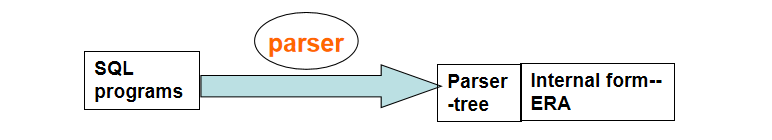 + 优化 Optimization
-
对于可能的查询，可能存在很多等效的关系代数式
- 每个关系代数操作可以通过多种不同的算法来评估。
-
评估 Evaluation
-
查询执行引擎接收查询评估计划，执行该计划，并返回查询的结果。
- 评估计划定义了每个操作所使用的算法，并且如何协调各个操作的执行。
优化的过程：
- 找出各种等效的关系代数表达式
- 一系列原始操作，被指定了详细的评估策略，被称为查询评估计划（Query Evaluation-Plan）。
- 查询优化：降低查询成本。这依靠于：执行的算法、数据库目录中的各种信息。
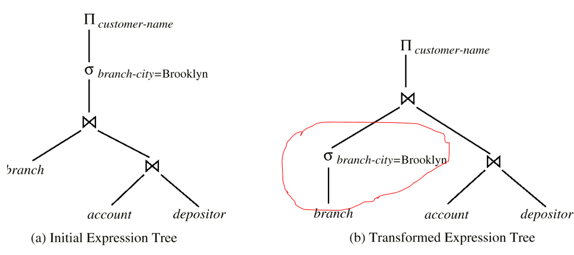
Measures of Query Cost
很快的接。
成本通常使用查询耗时估算。
- Many factors contributes to time cost ： Disk access + CPU + network communication
通常，磁盘访问 disk access是最耗时的部分，也一般最容易估算：
- 执行的寻道操作次数
- 读取的块数量 × 平均块读取成本
-
写入的块数量 × 平均块写入成本
- 写入的时间显然要多于读取的时间
- 写入的数据也需要重新读取，以确保更新
简略后，我们仅使用寻道次数(大约为4ms)与块传输次数(大约为0.1ms)进行估算，显然忽略了写回磁盘与CPU的成本。
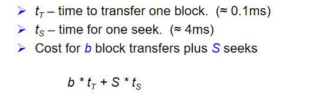
成本其实依赖于主存的大小，足够大小的主内存可以有效减少对磁盘的范文，但是这一块的增进通常不可估计。
Selection Operation
Basic algorithms
文件扫描 file scan：不使用索引的搜索。
A1 linear search
那么设想一下，我们需要检查\(b_r\)个块(包含关系r的所有块)，验证其是否符合selection condition，还需要一个寻道时间。如果仅有一个键满足，那么我们可以已找到就返回，这样平均情况只需要检查\(b_r / 2\)个块。
二分搜索通常用处比较小。因为数据一般不连续存储，这只是徒劳地增加寻道时间。
A2 binary search
适用场景：当选择条件是基于某个属性的等值比较，并且文件是根据该属性排序的时。
成本=⌈\(log_2(b_r)\)⌉块传输+⌈\(log_2(b_r)\)⌉次寻道，即\(T = ⌈\)log_2(b_r)\(⌉ * (t_s + t_T)\)
如果选择条件不是基于键属性，需要额外加上包含满足选择条件的记录的块的数量。
Selections Using Indices and equality
A3 primary index && equality on key 主索引且等值比较
\(cost = (h_i + 1) * (t_s + t_T)\)
A4 primary index && equality on nonkey 主索引且非键属性的等值比较
\(cost = h_i * (t_S + t_T) + t_S + t_T * b\)，其中\(b = sc(A,r) / f_r\)
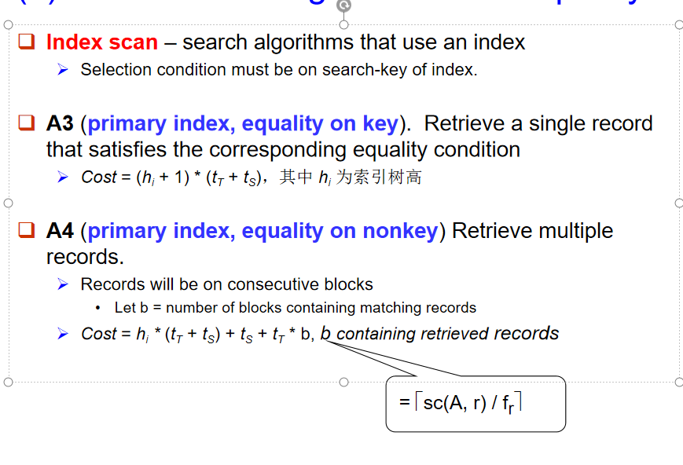
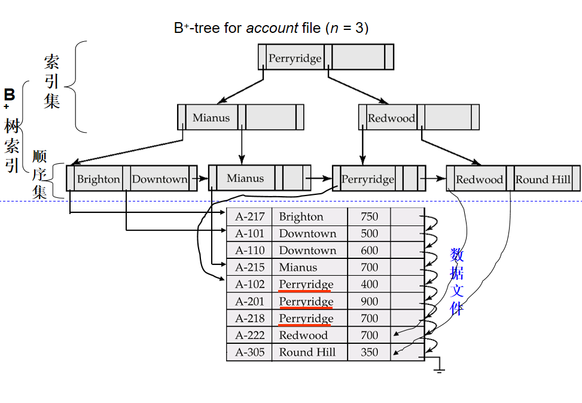
A5 secondary index && equality on nonkey 辅助索引且非键属性的等值比较
如果搜索键是候补健，保证了唯一性，成本就为：\(cost = (h_i + 1) * (t_S + t_T)\)
如果不是的话，那就糟糕了，Each of n matching records may be on a different block ，估算最坏成本是：\(cost = (h_i + n) * (t_S + t_T)\)
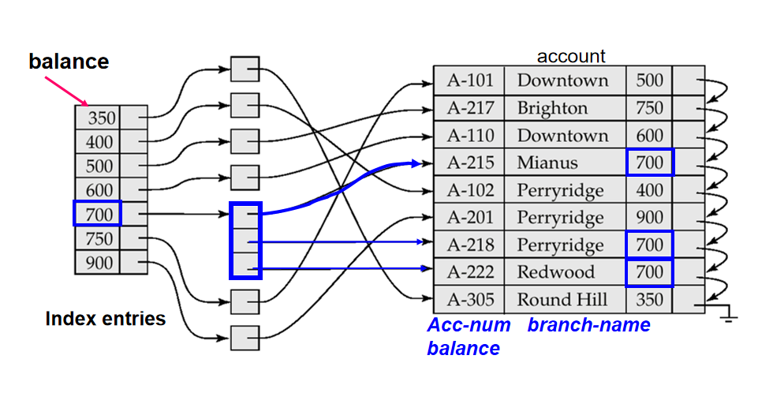
Selections Involving Comparisons 使用非等值比较
A6 primary index, comparison
- 对于\(A>=V\)的情况，一般使用index直接先找到\(V\)的所在位置，然后进行线性遍历
- 对于\(A<=V\)的情况，可以直接线性遍历，这种情况找到结尾是毫无意义的，而起始又很直接不用找
A7 secondary index, comparison
- 对于\(A>=V\)的情况，一般使用index直接先找到\(V\)的所在位置(第一个满足大于等于的点)，然后进行顺序扫描直到找到符合条件记录的指针
- 对于\(A<=V\)的情况，直接顺序扫描直到找到第一个大于的位置，获取指向符合条件记录的指针
Implementation of Complex Selections 多条件
\(σ_{θ1 ∧ θ2 ∧ ... ∧ θn}(r)\)
A8 conjunctive selection using one index
- 从多个选择条件 θ1, θ2, ..., θn 中选择第一个条件 θi，执行该条件所需的代价最小的算法。算法可以是 A1 到 A7 中的任意一种
- 分布执行：在执行最优条件后，将符合条件的元组加载到内存中（缓冲区）。接着，对这些元组应用其余的选择条件
- 对已经加载到内存中的元组，应用其余条件进行测试。如果某些条件的计算在内存中比在磁盘上执行更高效，那么可以将其留到内存中进行处理
A9 conjunctive selection using composite index
一次性处理多个条件，避免多个独立索引的查找和合并，从而减少磁盘I/O和计算开销
A10 conjunctive selection by intersection of identifiers
通过多个索引的交集来执行联合选择，适用于存在多个条件并且每个条件都有对应索引的情况:
- 对于每个选择条件，使用相应的索引来获取指向符合条件记录的指针集合。然后，通过计算这些指针集合的交集，得到符合所有条件的记录
- 一旦获得符合条件的记录指针集合，就可以从磁盘中加载相应的记录
- 如果某些条件没有适用的索引，则可以将这些条件应用于内存中的元组。也就是说，对于没有索引支持的条件，可以在已加载到内存中的记录上执行测试
A11 disjunctive selection by union of identifiers
\(σ_{θ_1∨θ_2∨⋯∨θ_n}(r)\)
每个条件都具有可用的索引，这种方法是最有效的。如果某些条件没有可用的索引，则使用线性扫描。
否定操作(Negation: \(σ_{¬θ}(r)\))
- 通常通过线性扫描寻找不满足的记录
- 对于满足条件的记录很少的情况，也可以通过索引先找到满足的，排除掉就是不满足的
*Sorting
排序的情况
- 输出请求
- 连接操作可以快速实现
我们建立索引以排序的顺序读取并不是物理上的排序，而是逻辑的排序。
- 对于适合内存(\(N<=M\))的关系，可以使用快速排序等技术进行排序。
- 对于不适合内存(\(N>M\))的关系，外部排序归并（External Sort-Merge）是一个不错的选择。
M: memory size;
-
创建排序的运行(sorted runs)
- 将 M 个关系块读入内存
- 对内存中的块进行排序
- 将排序后的数据写入运行 Ri，并将 i 增加 1
-
归并运行（N-way merge）
-
从所有缓冲区页面中选择第一个记录（按排序顺序）。
- 将该记录写入输出缓冲区。如果输出缓冲区已满，则将其写入磁盘。
- 从输入缓冲区页面中删除该记录。
- 如果缓冲区页面变为空，则将该运行的下一个块（如果有）读入缓冲区。
对于N>=M的情况
- 每一轮归并中，会将 \(M-1\) 个连续的运行（runs）合并，即数量每次减少\(M-1\)倍，每个run的长度翻\(M-1\)倍
- 最终合并到一个
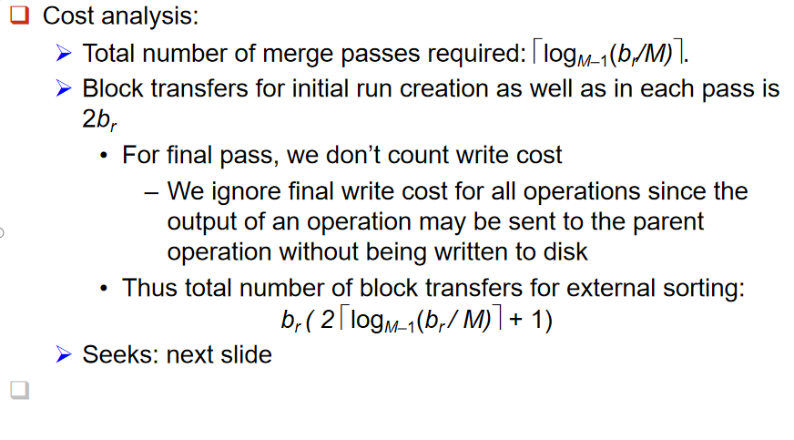
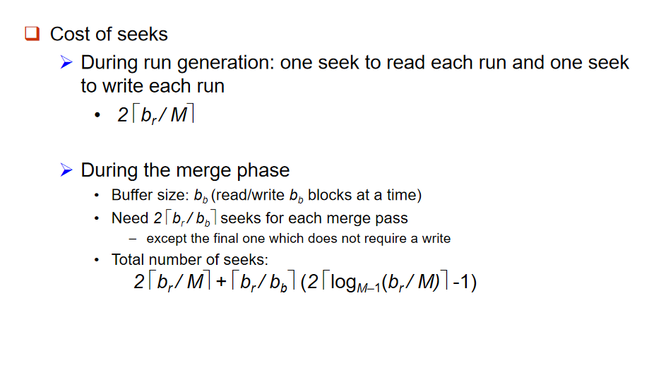
Join Operation
不同的算法来实现连接（joins）：
- 嵌套循环连接（Nested-loop join）
- 块嵌套循环连接（Block nested-loop join）
- 索引嵌套循环连接（Indexed nested-loop join）
- 归并连接（Merge-join）
- 哈希连接（Hash-join）
Nested-Loop Join
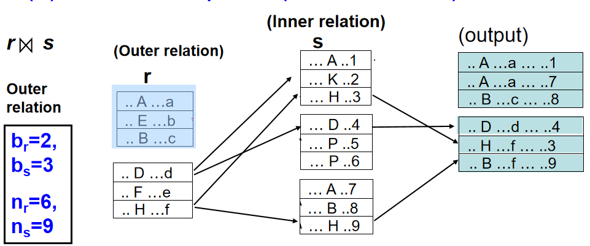
如何理解其寻道时间与传输块时间的计算？
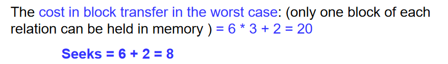
\(n_r*b_s + b_r\)为块传输时间。
而寻道时间这样理解：我们要先寻到r的两个块，对于寻的每一个，我们都要再寻s的三个，即\(n_r+b_r\)个。
当然这是对于memory只能放一个块的情况，如果可以放多个块，那么\(b\)就不需要乘了，我们有:cost:\(b_r + b_s\),seek:2。
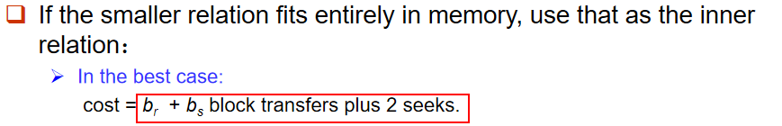
Block Nested-Loop Join
Each block in the inner relation s is read once for each block in the outer relation (instead of once for each tuple in the outer relation)
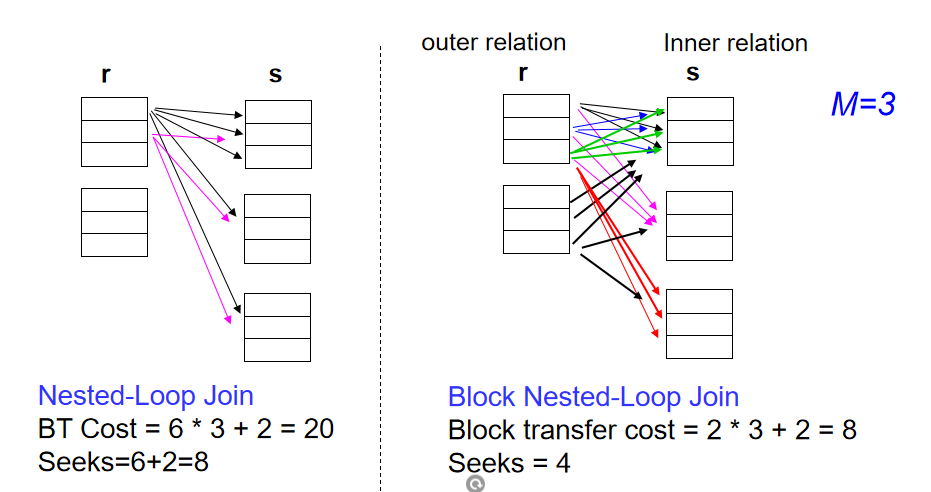
对于之前的循环而言，每次都要寻到tuple，而现在只需要寻到block，相当于少乘个3。
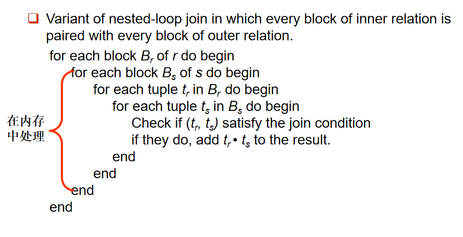
tuple移到内存中处理。
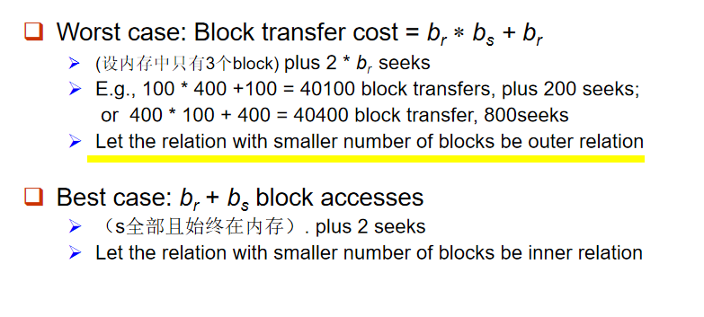
可以看到最好的情况和nested-loop join是一样的，最坏的情况则是减少了一个部分的M倍（memory大小）。
对于M虽然大于3(本情景中)但小于\(b_r\)、\(b_s\)的情况，充分利用内存buffer增大buffer中外层关系的block数。
Data Transfer cost = \(⌈ b_r / (M-2) ⌉ * b_s + b_r\) Seeks times= \(2 ⌈ b_r / (M-2)⌉\)
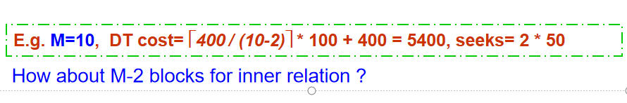
- 若等值连接（Equi-Join）属性在内层关系上是一个键，则可以在找到符合条件的情况下break。
- 交替前向和后向扫描内层循环，以更好地利用缓冲区中剩余的块（当使用最近最少使用（LRU）替换策略时）
- 如果有索引，使用内层关系上的索引
Indexed Nested-Loop Join
在最坏的情况下，
- \(b_r\)是外层关系\(r\)的块数。
- \(t_T\)是每个元组的索引查找时间（即从索引中查找单个匹配元组的成本）。
- \(t_S\)是从索引中读取匹配元组并将其传输到内存中的成本
- \(n_r\)是外层关系 \(r\) 的元组数。
- \(c\) 是为每个元组执行索引查找所需的成本。
那么，最坏情况下的总成本可以表示为：
\(Cost \ of Join=b_r×(t_T+t_S)+n_r×c\)
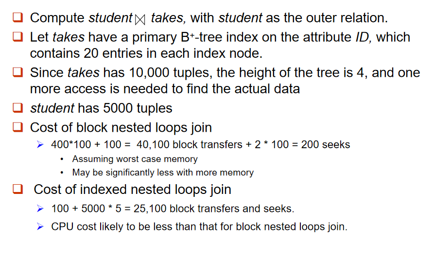
Merge-Join (sort-merge join, 排序归并连接)
- 对两个关系按照它们的连接属性进行排序（如果它们尚未按连接属性排序）
- 然后按序连接
-
重点是要求清理重复的部分
-
块传输成本：\(b_r+b_s\)
- 寻道成本：\(⌈ b_r / b_b ⌉\) + \(⌈ b_s / b_b ⌉\)
混合归并连接：
-
如果一个关系已经排序，另一个关系在连接属性上有一个二级 B+-树索引：
- 将已排序的关系与 B+-树的叶节点条目进行归并。
- 将结果按未排序关系元组的地址进行排序。
- 按物理地址顺序扫描未排序的关系，并与前面的结果进行归并，以用实际元组替换地址。
hash join
-
使用哈希函数 \( h \) 来将两个关系的元组进行分区。哈希函数 \( h \) 将连接属性（JoinAttrs）的值映射到 {0, 1, ..., n}，其中 JoinAttrs 表示用于自然连接的关系 \( r \) 和 \( s \) 之间的共同属性。
-
\( r_0, r_1, \dots, r_n \) 表示关系 \( r \) 的分区。每个元组 \( t_r \in r \) 会被放入分区 \( r_i \)，其中 \( i = h(t_r[\text{JoinAttrs}]) \)。
-
\( s_0, s_1, \dots, s_n \) 表示关系 \( s \) 的分区。每个元组 \( t_s \in s \) 会被放入分区 \( s_i \)，其中 \( i = h(t_s[\text{JoinAttrs}]) \)。
在 \( r \) 的 \( r_i \) 分区中的元组，只需要与 \( s \) 的 \( s_i \) 分区中的元组进行比较。
- 不需要与其他分区中的 \( s \) 元组进行比较，因为：
- 一个满足连接条件的 \( r \) 元组和 \( s \) 元组在连接属性上会有相同的值。
- 如果这个值被哈希到某个值 \( i \)，那么 \( r \) 元组必须位于 \( r_i \) 分区，而 \( s \) 元组则必须位于 \( s_i \) 分区。
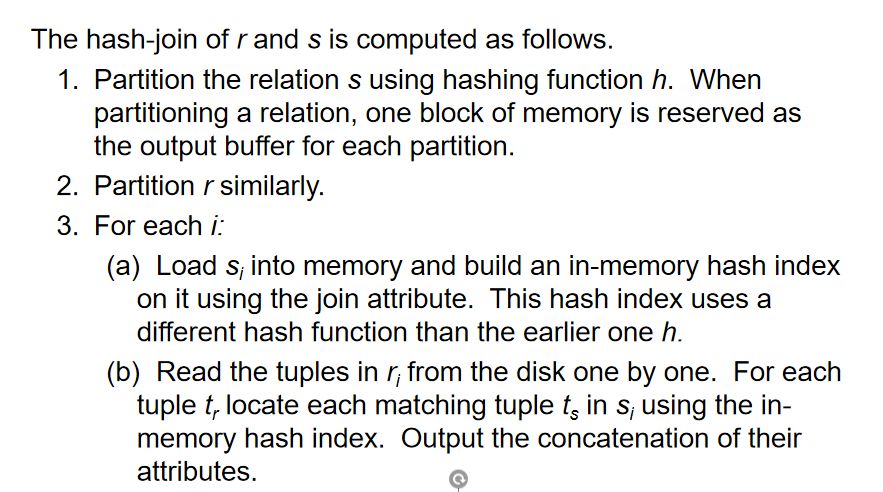
关系\(𝑠\)被称为构建输入（build input），而关系 \(r\) 被称为探针输入（probe input）。
下面是你提供的内容的翻译：
- 通常，\( n \) 被选择为 \( \lceil \frac{b_s}{M} \rceil \times f \)，其中 \( f \) 是一个“调整因子”（fudge factor），通常为 1.2。
探针关系的分区 \( s_i \) 不必完全适应内存
当分区数 \( n \) 大于内存页数 \( M \) 时，需要递归分区。
- 这种情况下，不是将数据分成 \( n \) 个分区，而是为 \( s \) 使用 \( M - 1 \) 个分区。
- 然后使用不同的哈希函数对这 \( M - 1 \) 个分区进行进一步分区。
- 对 \( r \) 也使用相同的分区方法。
存在探针关系不完全适应内存的情况，通常因为：
- \(s\)中许多元组在连接属性上具有相同的值（分区不均匀）。
- 哈希函数不好。
当某些分区的元组数明显多于其他分区时，分区被称为有偏的（skewed）。
解决方案：使用\(f\)即调整因子。
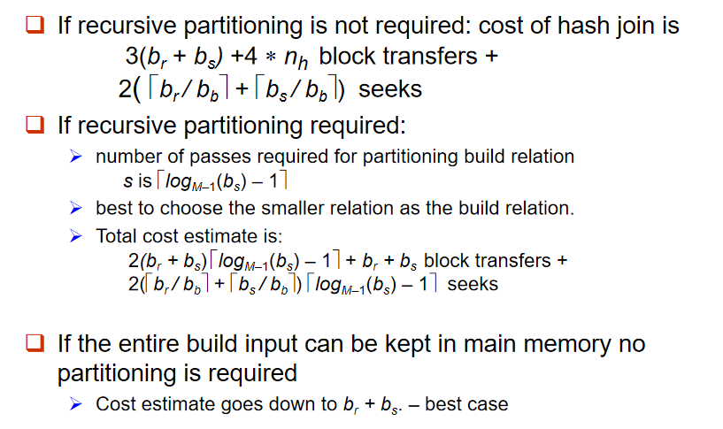
中间：需要递归分区（分区不能类似mod一样完美区分s的情况）
后面不考先不看了。